+++
title = "İkonik Tasarımlar: Koltuk"
seotitle="İkonik Koltuk Tasarımları - 6 Koltuk Modeli"
description="Bu sayımızda 6 adet ikonikleşmiş olan koltuk tasarımını inceliyoruz. Alvar Aaltonun Paimio koltuğu, Swan chair, Up Armchair, Bocca Sofa ve Sacco Armchair."
url="sayi-7/ikonik-tasarimlar-koltuk/"
aciklama="Bazıları müzelerden müzelere gezdi, bazıları hastalar için velinimetti, bazıları da konserde sanatçıyla birlikte sahnedeydi. Rahatlıklarının yanında görsellikleriyle de bizleri yıllardır etkisi altına alıp bir çok dergiye kapak olan bu ikonik koltuk tasarımları şimdi Markut'ta :)"
type="sayfa"
thumb="/img/ikonik-tasarimlar-koltuk-markut-thumbnail.jpg"
date = "2021-03-02"
sayi=["07"]
sayfa="06"
yazar=["zeynep dag"]
tags= ["anasayfa", "dergi", "ikonik"]
+++

<div class="container">
   <p>
      <strong
         >Bazıları müzelerden müzelere gezdi, bazıları hastalar için
         velinimetti, bazıları da konserde sanatçıyla birlikte sahnedeydi.
         Rahatlıklarının yanında görsellikleriyle de bizleri yıllardır etkisi
         altına alıp bir çok dergiye kapak olan bu ikonik koltuk tasarımları
         şimdi Markut&#39;ta :)</strong
      >
   </p>
   <h2>Armchair 41 "Paimio"</h2>
   <div class="row">
      <div class="col-md-6">
         <p>
            {{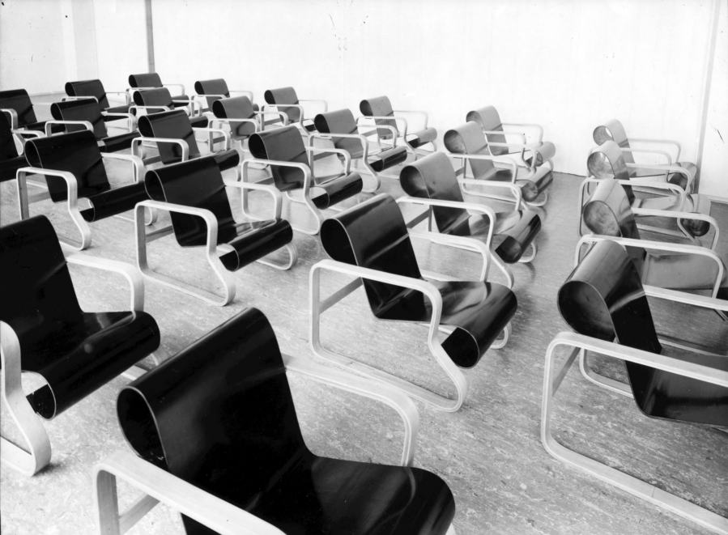}}
         </p>
         <p>
            {{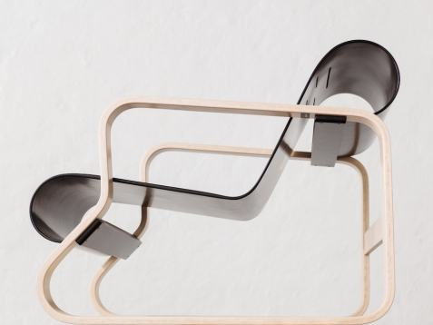}}
         </p>
      </div>
      <div class="col-md-6">
         <p>
            <strong>Paimio koltuk</strong>, Fin mimar
            <strong><em>Alvar Aalto</em></strong> tarafından 1931-32 yıllarında,
            aynı zamanda mimarı olduğu Paimio Sanatorium’u için
            özel olarak tasarladığı ikonik bir üründür. Aalto,
            Tüberküloz hastalarının tedavisi için kullanılacak
            Paimio Sanatoryum’unun her detayını hastaların
            ihtiyaçlarına göre tasarlamıştır.
         </p>
         <p>
            Paimio koltuğun tasarımındaki incelik ise;
           Alvar Aalto, uzun saatler boyunca burada oturacak hastaların rahat etmesi için
            özel tasarlamış, sandalyenin sırt açısını da hastaların rahat nefes
            almasını sağlayacak, en iyi açıya getirerek üretmiştir.
         </p>
         <p>
            Konforu kadar heykelsi tasarımıyla da öne çıkan
            <strong>Paimio</strong> koltuğu, 1930’ların başında kontrplak
            üretiminin sınırlarını zorlayacak türde bükümlü bir yapıya
            sahip. Koltuğun kollarını, bacaklarını oluşturan çerçeve; iki lamine
            ahşap halkadan meydana geliyor. Bunların arasında sadece dört
            noktada çerçeveye sabitlenen, hem altta hem üstte içe kıvrılmış
            olarak bulunan preslenmiş ince kontrplak tabakası ise; esnek
            görünümlü koltuk kısmını oluşturuyor.
         </p>
         <p>
            Koltuğun tasarımında, <em>Marcel Breuer</em>’in 1927 yapımı çelik borulardan oluşan
            <strong
               ><a
                  href="https://www.markut.net/sayi-0/ikonik-tasarimlar-sandalye/"
                  >Club Chair (Wassily Chair)</a
               ></strong
            >
            tasarımından ilham alan Aalto,
            <em>Club Chair’</em>in çelik borularını soğuk buluyordu.
            Doğal hissi, insansı yapısı ve yalıtım özellikleri nedeniyle bina
            akustiklerinde ve mobilya tasarımlarında sık sık kullandığı
            Finlandiya’nın yerel huş ağacından üretilen ahşabı tercih etmiştir.
         </p>
         <p>
            Paimio Sanatoryum&#39;u
            Alvar Aalto’yu dünyaca ünlü bir mimar yapıyor ve bu vasıtayla mobilya
            tasarımı kariyerinin de başlangıcını oluşturuyor.
         </p>
         <p>
            Paimio Koltuk günümüzde New York’taki MoMA ve
            Finlandiya Tasarım Müzesi’nin kalıcı koleksiyonları arasında yer
            alıyor. Ürün, 1935 yılında Aalto ve eşi
            Aino tarafından tasarlanan diğer ahşap
            mobilyaları üretmek ve satmak için
            kurulan Artek firmasının hala aktif olarak
            üretiminde.
         </p>
      </div>
   </div>

   <p>{{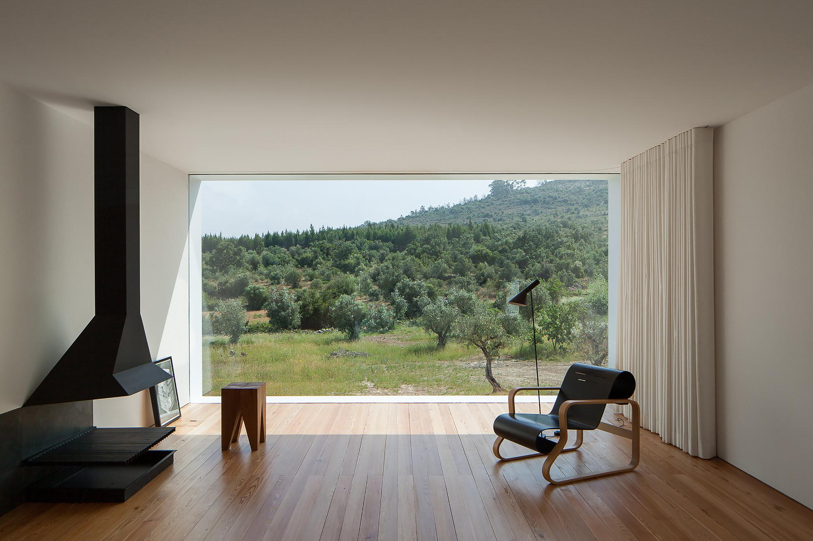}}</p>

   <hr >
   <h2>Swan Chair</h2>
   <div class="row">
      <div class="col-md-6">
         <p>
            {{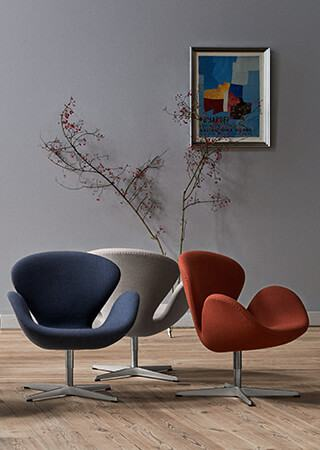}}
         </p>
      </div>
      <div class="col-md-6">
         <p>
            Mimar ve tasarımcı <strong><em>Arne Jacobsen</em></strong
            >&#39;in mimarı olduğu Kopenhag&#39;daki SAS Royal Hotel için ortama
            hareket katacak mobilyalar tasarlamayı düşünüyordu ve bu noktada
            <strong>Swan Chair</strong> ve <strong>Egg Chair</strong> gibi
            (1958) kendi döner tabanı üzerinde dönmesine izin veren, yoğun otel
            atmosferinde aktif katılımcılar haline getiren bu iki sandalyeyi
            tasarladı.
         </p>
         <p>
            Egg Chair de Swan Chair de
            teknolojik olarak yenilikçi sandalyelerdi; düz çizgiler yoktu sadece
            kıvrımlardan oluşuyordu.
            <a href="https://www.markut.net/sayi-0/ikonik-tasarimlar-sandalye/"
               >(Egg Chair’e 0. sayımızda yer vermiştik.)</a
            >
            Bu iki sandalye de çevresine özel bir şey katan zarif bir duruşa
            sahip. Rahat ve destekleyici yönü, hem onu gördüğünüzde hem de içine
            oturduğunuzda öne çıkıyor.
         </p>
         <p>
            <strong>Swan Chair</strong>, Yıldız şeklindeki alüminyum taban,
            parlak cilalı çelik bir kaide üzerine monte edilmiştir. Soğuk
            köpükten yapılmış, akıcı organik şekli üzerine kumaş veya deri ile
            kaplanmıştır.
         </p>
         <p>
            Bu iki orijinal tasarım sandalye, Jacobsen'in Kopenhag&#39;ın kuzeyindeki Klampenborg&#39;daki evinde
            kendi garajında ortaya çıktı ve o zamandan beri
            <em>Fritz Hansen</em>&#39;de üretiliyor.
         </p>
      </div>
   </div>

   <div class="row">
      <div class="offset-md-3 col-md-6 mt-5 mb-5">
         <video width="100%" height="100%" loop autoplay>
            <source src="https://www.markut.net/sayi-7/ikonik-tasarimlar-koltuk/fh_film_swan-christianshavn_1600x900-final-mp4.mp4" >}}
         </video>
      </div>
   </div>

   <hr >
   <h2>Up Armchair</h2>
   <div class="row">
      <div class="col-md-4">
         <p>
            {{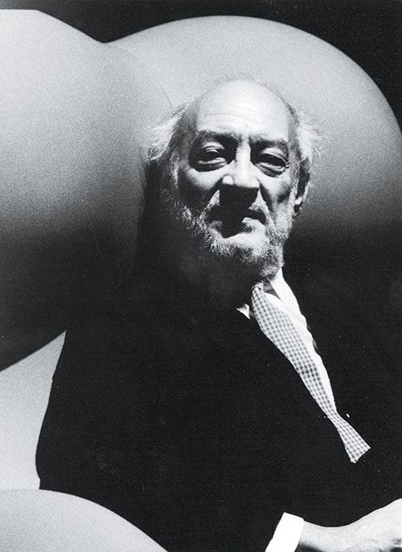}}
         </p>
      </div>
      <div class="col-md-4">
         <p>
            <strong>Up koltuğun</strong> tasarımcısı İtalyan mimar
            <strong><em>Gaetano Pesce.</em></strong> Bu tasarım fikrinin aklına
            duşta geldiğini söylüyor
            <em
               >“Elimde sünger vardı. Süngere bastığımda küçüldü ve serbest
               bıraktığımda orijinal hacmine geri döndü.&quot;</em
            >
            Bu durum bir fikir yarattı: Bir koltuk aynı şekilde davranamaz mı?
         </p>
         <p>
            Bu koltuk durumunda, nesnenin benzersiz formu, teknolojik yenilikle
            yan yana getirilerek, form ve teknik arasında hayret verici bir
            kutuplaşma yaratıldı. Koltuk için elde sıkıldığında hacmini kaybeden
            ve serbest bırakıldığında geri kazanan süngerin kasılma prensibi
            uygulamayı düşünen
            <strong><em>Pesce</em></strong
            >.. O dönemde firmanın öncüsü olduğu enjekte edilmiş poliüretan
            teknolojisi sayesinde Pesce&#39;nin fikri uygulanabilir hale getirdi. Koltuk elastik
            kumaşlarla kaplandı ve maksimum kasılmayı sağlamak için vakumla
            paketlendi, bu da hacimde % 90&#39;a varan bir azalma sağladı. Aynı
            zamanda depoda daha az hacim ve nakliye maliyetlerinde önemli
            tasarruflar sağladı.  Ambalaj açıldığında, atmosferik basınç
            poliüretanla karıştırılmış Freon gazı içindeki hücrelere hava itti
            ve nesne muhteşem bir şekilde yukarıya doğru büyümesini sağladı ve
            orijinal formuna geri döndü. Bu mükemmel yükseliş de ismini almasını
            sağladı ‘UP’.
         </p>
      </div>
      <div class="col-md-4">
         <p>
            {{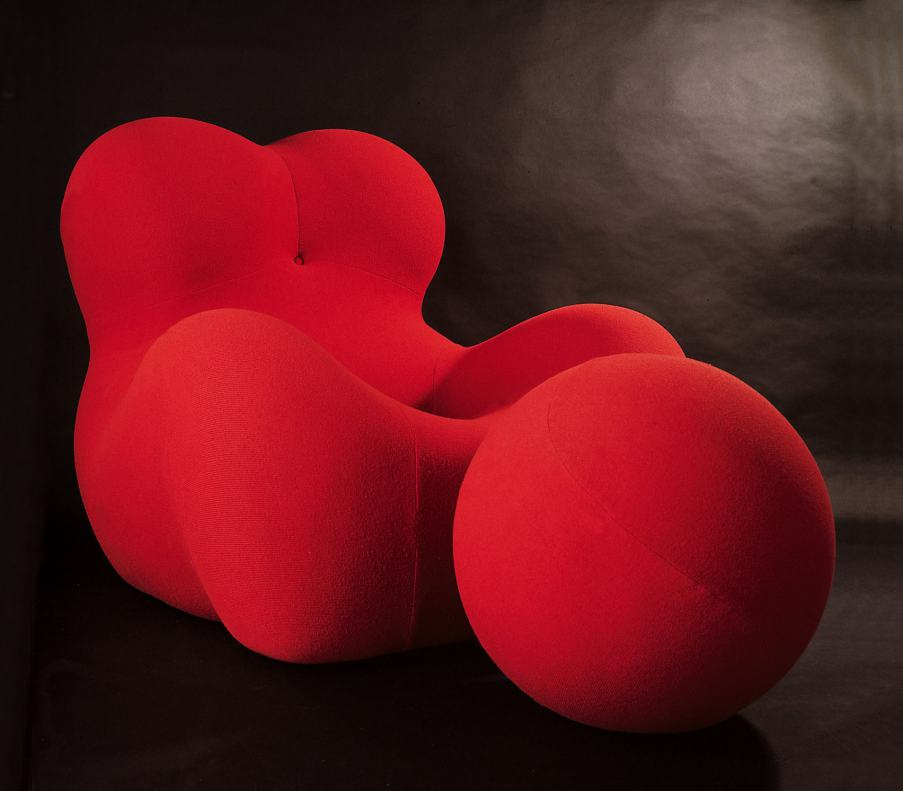}}
         </p>
      </div>
   </div>

   <div class="row">
      <div class="col-md-6">
         <p>
            {{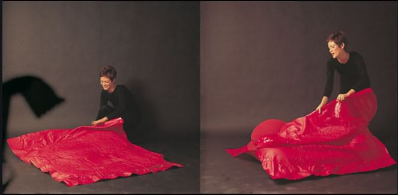}}
         </p>
      </div>
      <div class="col-md-6">
         <p>
            {{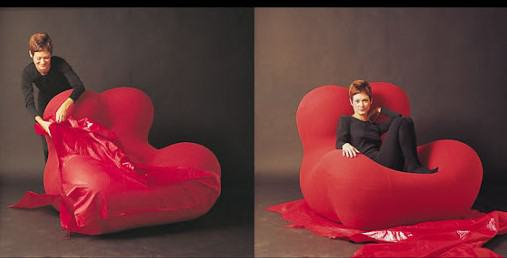}}
         </p>
      </div>
   </div>

   <p>
      Vakumlu paketleme tekniği 1973 yılına kadar kullanıldı. 1973 yılında,
      koltuğu şişirmek için kullanılan Freon gazı, ozon üzerindeki olumsuz
      etkisi nedeniyle kullanımı yasaklandığında üretimi durduruldu. 
      <strong>B&amp;B Italia</strong> şirketi, 2000 yılında tamamen köpüğünün
      yoğunluğuna bağlı yeni bir soğuk şekilli poliüretan yapı ile çeyrek asır
      sonra ürünü yeniden üretime geçirdi.
   </p>
   <p>
      Form tipi olarak, tipik bir koltuk değildi.  Kadim doğurganlık
      tanrıçalarının silüetlerinden esinlenen ve bir top ve zinciri andıran ekli
      bir puf şekli anlamla doluydu.
   </p>
   <p>
      Pesce, <em>&quot;Bu bir mahkum imajı&quot;</em> diyor. 
      <em
         >&quot;Kadınlar, erkeklerin önyargısından dolayı acı çekiyor. Koltuğun
         bu sorun hakkında konuşması gerekiyordu.&quot;</em
      >
      Bu formun anlamı da daha sonrasında büyük tartışmalara yol açacaktı.
   </p>
   <p class="text-center">
      {{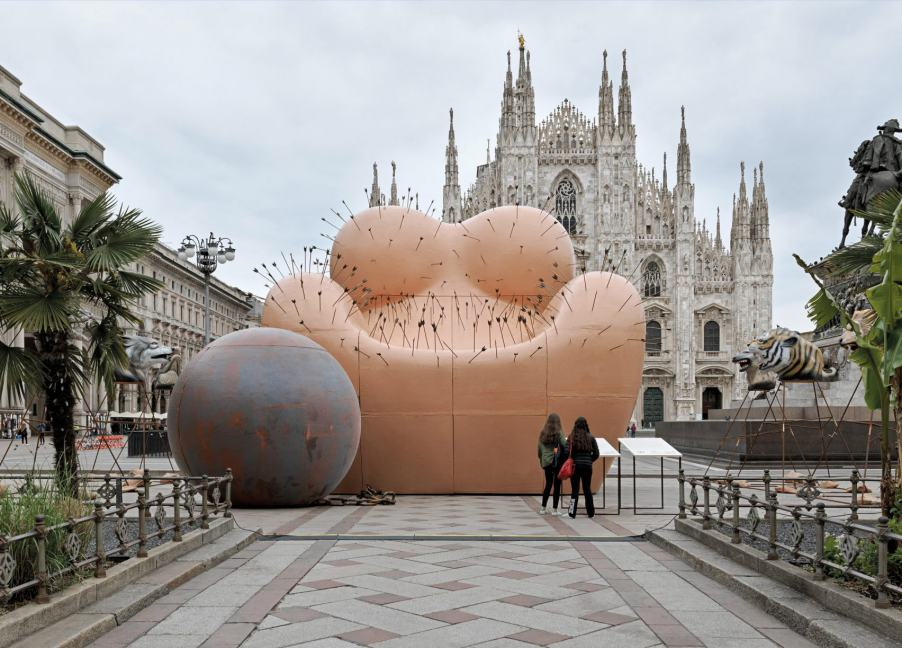}}
   </p>
   <p class="p-3 p-md-5 bg-grey">
      <em>&gt;&gt; İtalyan tasarım tarihinde bir yer edinmiş tasarım öncüsü</em>
      <strong>Gaetano Pesce</strong>&#39;nin kabarcıklı koltuğu olan
      Up serisinin 50. yıl dönümünü anıyor.  Doğurganlık
      tanrıçasına benzeyen ve bir top ve zincirle birlikte gelen sandalye
      1969&#39;da piyasaya sürüldü. Parça, kadınların mahkum olduğu fikrini ele
      almayı amaçlıyordu. İnsanların önyargısının tutsakları ve tam özgürlüğün
      engellendiği bir dünyada yaşayanlar. Uluslararası bir iç tasarım etkinliği
      olan <strong>Salone del Mobile</strong> sırasında kurulan sandalyenin (26
      fit yükseklikte duran) yeni yorumunda, etkileyici silueti delen 400 ok
      var.  <strong>Pesce</strong>&#39;nin amacı, sohbeti kadına yönelik şiddet
      üzerine odaklamaktı. <strong>Gaetano Pesce</strong>
      <em>yaptığı açıklamada,</em> &quot;Tasarım Haftası sırasında Piazza del
      Duomo&#39;daki enstalasyon İtalyan yaratıcılığını kutlamayı, aynı zamanda
      bu acı mesajı dünyanın her yerinden binlerce ziyaretçinin vicdanına geri
      getirmeyi amaçlıyor.&quot;
   </p>
   <p class="p-3 p-md-5 bg-grey">
      &quot;Acı Çeken Majesteleri&quot; başlıklı çalışmaya,
      insan zulmünü simgeleyen altı dev polistiren hayvan başı eşlik ediyor. 
      Yerel yönetim tarafından desteklenen heykel, halk arasında tartışmalara
      yol açtı ve
     İtalyan feminist grup Non Una di Meno tarafından
      muhalefetle karşılandı. Heykelin kadın bedenini nesneleştirdiğini ve bir
      erkek tarafından yapıldığını protesto edildi. (Jacopo Prico, CNN, 10 Nisan
      2019)
   </p>
   <div class="row">
      <div class="col-md-6">
         <p>
            {{}}
         </p>
      </div>
      <div class="col-md-6">
         <p class="p-3 p-md-5 bg-yellow">
            <em
               >&quot;Ceci n&#39;est pas une femme&quot; sloganıyla
               &quot;Non Una di Meno&quot; feministleri,</em
            >
            <strong>Gaetano Pesce</strong>&#39;nin
            <strong>&quot;Acı Çeken Majesteleri&quot;</strong> yerleştirmesine
            karşı Piazza Duomo&#39;da gösteri yaptılar.
            Tasarımcının 1969&#39;da yarattığı ünlü
            <strong>&quot;Up serisi&quot;</strong> koltuğundan esinlenilen eser,
            kadına yönelik şiddet sorununu simgeleyen yüzlerce okla delinmiş bir
            kadın bedenini tasvir ediyor (LaPresse)
         </p>
         <p class="p-3 p-md-5 bg-yellow">
            <em>Militanlar saldırıyor</em> &quot;Kadına yönelik şiddeti daha da
            şiddetlendiren bir temsil, çünkü eleştirmek istediği şeyi
            somutlaştırıyor&quot;<em>.</em> &quot;Kadın, savunmasız bir beden ve
            mağdur olarak. Şiddet aktörünü hiçbir zaman sorgulamadan temsil
            ediliyor. Ve tüm bunlar insan formundan geçmeden: Koltuk ve iğne
            yastığının kafası, elleri ve insanlığı ifade eden her şeyden
            yoksundur&quot;<em>. (LaPresse)</em>
         </p>
      </div>
   </div>

   <hr >
   <h2>Bocca Sofa</h2>

   <p>
      <strong>Bocca Sofa,</strong> <strong>Gufram</strong> şirketinin ikonik
      dudak şeklindeki kanepesi.  Bu tasarım nesnesi, diğerlerinden daha çok,
      kadınsı güzelliğin mükemmel soyutlamasını temsil ediyor.  David La
      Chapelle ve Richard Avedon gibi önemli fotoğrafçıların stil ikonları,
      ilham perileri ve Marisa Berenson, Heidi Klum, Anne Hathaway ve Sharon
      Stone gibi dünyanın en güzel kadınlarıyla birlikte fotoğraflanması tesadüf
      değil.
   </p>
   <p>
      <strong>Gufram</strong>&#39;ın en iyi bilinen ürünlerinden biri ve gerçek
      bir diva olarak çok fazla tasarım ve moda dergi kapaklarında ve makalenin
      ana kahramanlarından biri oldu. Louvre ve Monako&#39;daki Tasarım Müzesi
      gibi dünyanın en önemli müzelerinde de sergileniyordu.
   </p>
   <div class="row">
      <div class="col-md-6">
         <p>
            {{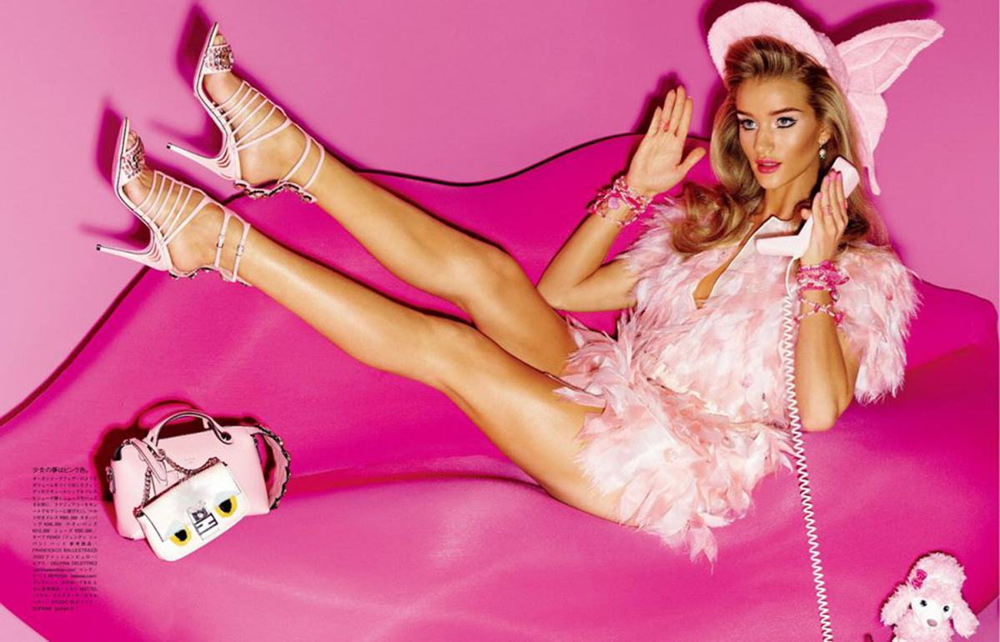}}
         </p>
      </div>
      <div class="col-md-6">
         <p>
            {{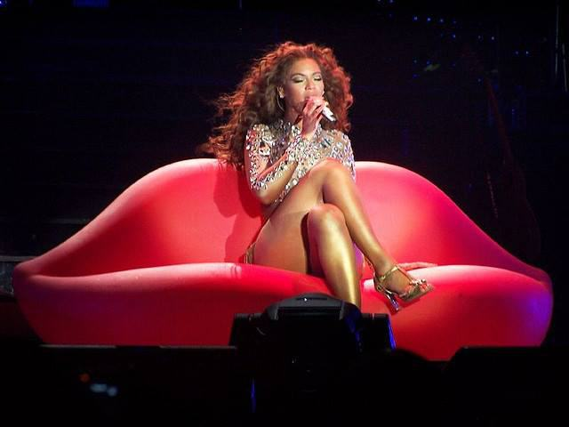}}
         </p>
      </div>
   </div>

   <div class="row">
      <div class="col-md-6">
         <p>
            {{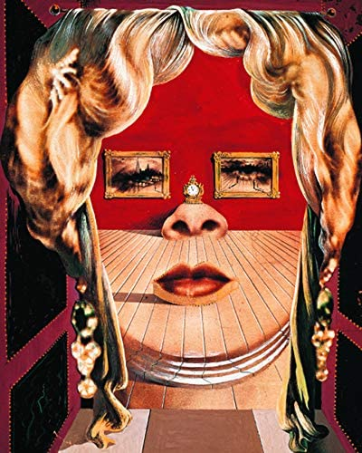}}
         </p>
         <p>Salvador Dali - Mae West Portresi</p>
      </div>
      <div class="col-md-6">
         <p>
            1935&#39;te sürreal sanatçı <em>Salvador Dalì</em>&#39;nin
           Mae West Portresi&#39;nden ve Hollywood
            yıldızlarının kırmızı dudaklarından ilham alan
            Studio 65 mimarları, bir kült nesnesi olacak bir başyapıta imza attılar.
           Bocca, ev mobilyalarının en çok aranan, sevilen ve
            taklit edilen ürünlerindendir. 1970 orijinali yalnızca
           Gufram&#39;a aittir.
         </p>
         <p>
           Gufram; endüstriyel tasarımın sınırlarını zorlamasıyla dünya çapında
            tanınan bir İç Tasarım İtalyan markasıdır. Radikal Tasarım ruhu ve
            estetik, teknolojik ve malzeme araştırmalarıyla bağlantılı uyumsuz
            deneyimleriyle Gufram, kolektif hayal gücüne giren
            koltuklar ve iç tasarım ikonları yarattı:
            Bocca gibi.
         </p>
         <p>
            2008&#39;den beri Bocca&#39;nın iki yeni versiyonu
            var: Dark Lady ve Pink Lady. İlki
            - asi, tamamen siyah ve büyük boy bir piercing ile - belirgin bir
            gotik eğilime sahiptir. Şehvetli ve rock ruhunu gösteriyor.
         </p>
         <p>
            Diğer versiyon olan Pink Lady, daha göz alıcı ve
            modaya uygun bir renkte (fuşya) yeni bir rujla geliyor, bu da onu
            daha çok konuşma konusu olan bir kanepe yapıyor;  muhteşem bir
            ışıltılı modernite için ideal ortam.
         </p>
         <p>
            2016&#39;daki ilk 50 yılını kutlamak için <strong>Gufram</strong>,
            yalnızca elli <strong>Bocca</strong> kanepeden oluşan özel bir
            sınırlı seri sunuyor.  Hollywood divalarının kırmızı dudaklarından
            ilham alan ikonik şeklini koruyan bu yeni
            GOLD baskısı, markanın önemli dönüm noktasını
            vurguluyor ve dünyanın en güzel evlerine ve en önemli müzelerine
            kabul edilen bir nesneyi daha da zenginleştiriyor.
         </p>
      </div>
   </div>

   <div class="row">
      <div class="col-md-3">
         <p>
            {{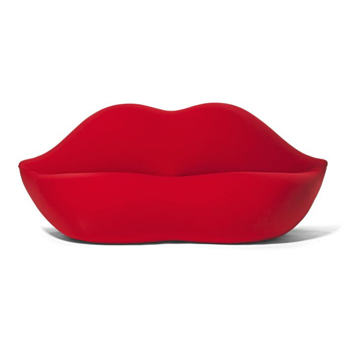}}
         </p>
         <p>Bocca Sofa</p>
      </div>
      <div class="col-md-3">
         <p>
            {{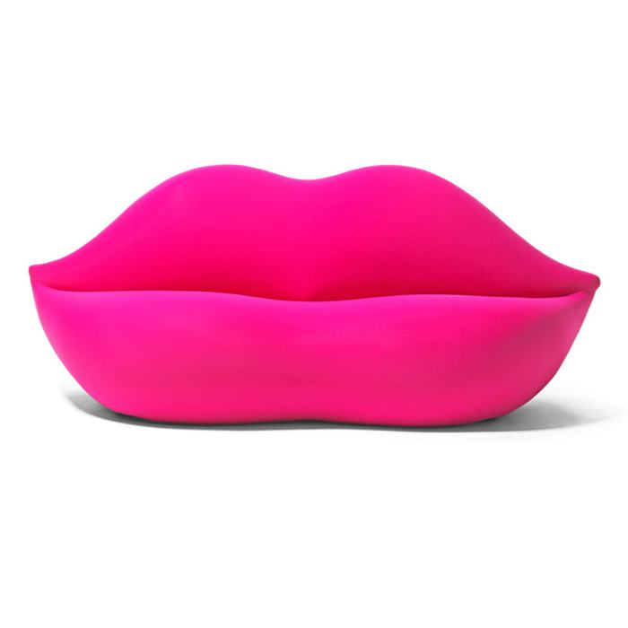}}
         </p>
         <p>Pink Lady</p>
      </div>
      <div class="col-md-3">
         <p>
            {{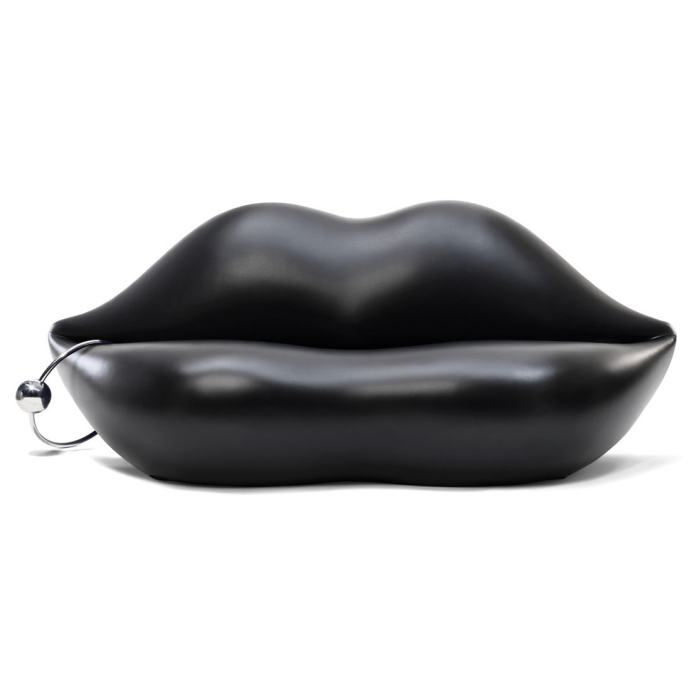}}
         </p>
         <p>Dark Lady</p>
      </div>
      <div class="col-md-3">
         <p>
            {{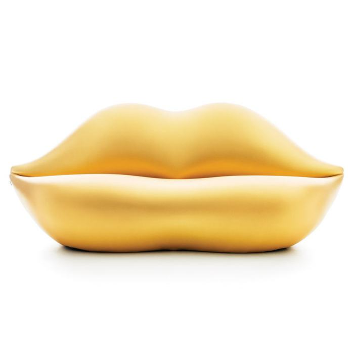}}
         </p>
         <p>Gold</p>
      </div>
   </div>

   <hr >
   <h2>Sacco Armchair</h2>
   <div class="row">
      <div class="col-md-4">
         <p>
            {{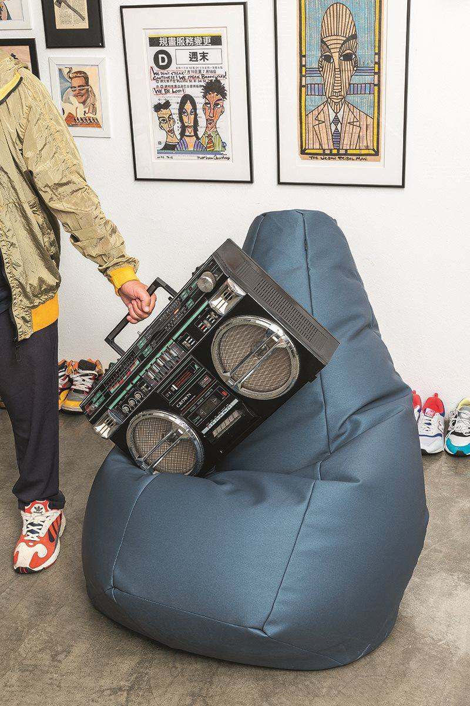}}
         </p>
      </div>
      <div class="col-md-4">
         <p>
            Armut koltuk olarak da bildiğimiz
            Sacco koltuklar, günlük hayatımıza eğlenceli bir
            koltuk alternatifi olarak görünse de kendisi mobilya tasarım
            tarihinde devrim niteliğinde bir tasarımdır.
         </p>
         <p>
            Armut koltukların, bir çuvalı (Sacco) polistiren
            toplarla doldurma hareketinin ötesinde, tanımlanmış net bir şekli
            yok. İşte tam da bu nedenle, mevsimler, modalar ve akla gelebilecek
            her &#39;izm&#39; ile zamana meydan okuyan bir tasarımı var.
         </p>
         <p>
            &quot;Sacco&quot; Armut koltuk, 1968 yılında
            İtalya&#39;nın Torino kentinde
            <em>Franco Teodoro, Cesare Paolini ve Piero Gatti</em>
            tarafından tasarlandı. Tasarımcılarının fikri, herhangi bir
            pozisyonda herhangi bir vücuda kolayca uyum sağlayabilen
            &quot;evrensel&quot; bir koltuk
            tasarlamaktı. Sacco&#39;nun, şüphesiz ki bu
            iddiasını çok iyi yerine getirdiğini söyleyebiliriz.
         </p>
      </div>
      <div class="col-md-4">
         <p>
            {{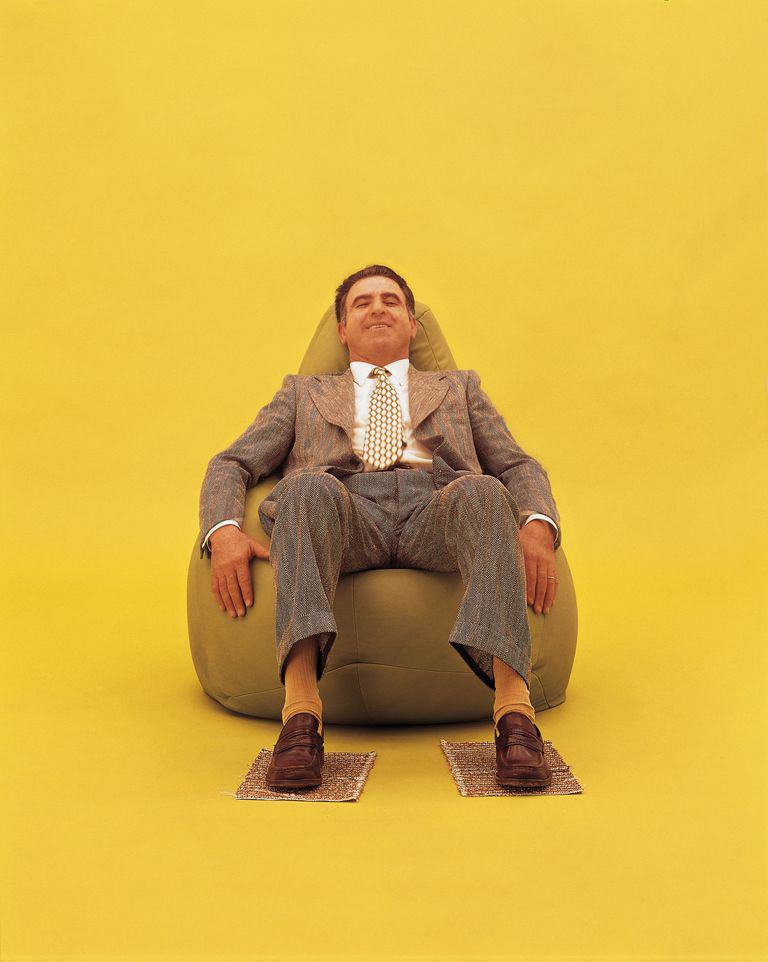}}
         </p>
      </div>
   </div>

   <div class="row">
      <div class="col-md-6">
         <p>
            {{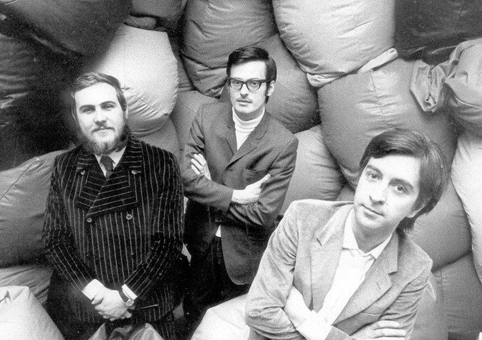}}
         </p>
         <p>
            Yıllar sonra bir röportajda <strong><em>Gatti</em></strong
            >, ikonik koltuğu yaratma sürecini anlattı:
            <em
               >"Farklı durumlara, farklı fiziksel yapılara uyum
               sağlayabilecek, olabildiğince esnek nesneler tasarlamak için
               çalışıyorduk. Bu işlevlere izin verecek bir koltuk düşünün dedik.
               Hem vücut hem de pozisyonları için bu uyarlanabilirliğe izin
               verecek bir malzeme düşünmeye başladık"</em
            >
         </p>
         <p>
            Tasarımcılar, armut koltuğun içini doldurmak için
            konfor seviyesini en iyi sağlayan polistiren ile karşılaştı.
            Polistiren, strafor ile aynı malzeme ailesine aittir ve genel olarak
            paketleme ve yalıtımın yanı sıra ses ve ısı yalıtımı gibi amaçlar
            için kullanılır. Koltuğun dışı sentetik deri veya pamuk / naylon
            karışımı bir kabuktan yapılır.
         </p>
         <p>
            Sacco yumuşak ve yardımcı bir nesnedir: üzerine
            dilediğiniz gibi oturabilir veya üzerine uzanabilirsiniz. Gerçek bir
            &quot;evcilleştirilmiş&quot; bir ürün ve İtalyan tasarımının en
            parlak nesnelerindendir.
         </p>
      </div>
      <div class="col-md-6">
         <p>
            {{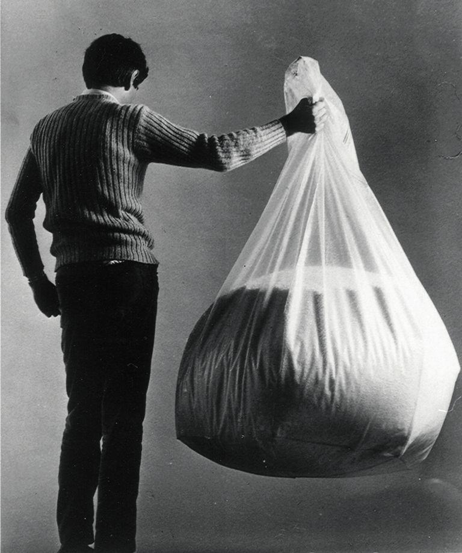}}
         </p>
      </div>
   </div>

   <hr >
   <h2>Kubus Armchair</h2>
   <div class="row">
      <div class="col-md-6">
         <p>
            {{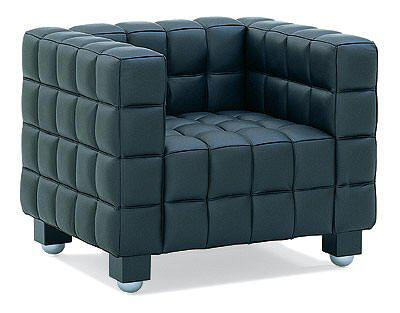}}
         </p>
      </div>
      <div class="col-md-6">
         <p>
            <strong><em>Josef Hoffmann</em></strong> parlak bir Avusturyalı
            mimardı. 20. yüzyılda mimarinin en ikonik figürlerinden biri oldu.
            İtalya’ya yaptığı bir yolculuğun ardından, stilini geliştirdi ve
            ayrıntılara gerçek bir göz atarak stilini daha özlü ve geometrik
            hale getirdi.
         </p>
         <p>
            &quot;Kubus&quot; koltuk, Arjantin&#39;in
            bağımsızlığının yüzüncü yılını kutlamak için 1910&#39;da Buenos
            Aires&#39;te düzenlenen bir sergi için yapıldı.  Adı, o yıllarda
            doğup onaylanan kübizmi anımsatmaktadır.
            Hoffmann bazı açılardan hareketin
            öncüsüydü.  Her şeyden önce Kubus, Hoffmann
            &#39;ın geometrik formlara olan tutkusunun ve kareyi sürekli
            kullanmasının sembolüdür. Bu nedenle mimaride de üslubu
            &quot;Quadratstil&quot; olarak adlandırıldı.
         </p>
         <p>
            <strong>Kubus Koltuk</strong>, masif ahşap çerçeve üzerine
            poliüretan köpük ve ayrı ayrı dikilmiş ve şeritli deri parçalardan
            yapılmış döşeme ile kaplıdır ve olağanüstü bir tasarım ürünüdür.
            Josef Hoffmann, modern ve sofistike bir tarz geliştirmişti. Koltuk basit görünse
            de aslında detaylara gösterilen titizliğin bir sonucudur.
         </p>
      </div>
   </div>

   <div class="text-center">
      <p>
         {{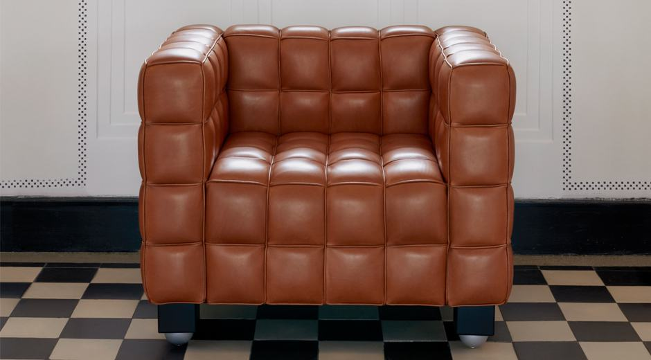}}
      </p>
   </div>

   <button
      class="btn markutbtn"
      data-target="#my-collapse"
      data-toggle="collapse"
      aria-expanded="false"
      aria-controls="my-collapse"
   >
      Kaynaklar
   </button>
   <div id="my-collapse" class="collapse">
      <pre> <small><code>  
    Armchair 41 "Paimio"

    - https://www.artek.fi/en/products/armchair-41-paimio#info
    - https://www.gzt.com/arkitekt/sanatoryumdan-mobilya-tasarimina-uzanan-bir-macera-paimio-chair-3548830
    - https://en.wikipedia.org/wiki/Paimio_Sanatorium
    
    Swan Chair
    
    - https://fritzhansen.com/en/products/Lounge chairs/3320_swan_fabric
    - https://fritzhansen.com/en/swan
    - https://www.dwr.com/living-lounge-chairs/swan-chair/7501.html?lang=en_US
    - https://www.scandinavia-design.fr/swan-jacobsen-arne-fritz-hansen_en.html
    - https://en.wikipedia.org/wiki/Radisson_Collection_Hotel,_Royal_Copenhagen
    - https://en.wikipedia.org/wiki/Arne_Jacobsen
    
    Up Armchair
    
    - https://www.dezeen.com/2019/04/29/gaetano-pesce-up-chair-interview-protest-milan-design-week/
    - https://milano.corriere.it/19_aprile_07/femministe-non-di-meno-contro-maesta-gaetano-pesce-0c9130d8-5938-11e9-859f-47e26e3c4c3e.shtml
    - https://www.dwell.com/article/up-chair-50th-anniversary-gaetano-pesce-bandb-italia-5742f757#:~:text=The original Up chair%2C designed,the Up chair in 1969.
    - https://www.architecturaldigest.com/story/the-story-behind-gaetano-pesces-iconic-armchair
    - http://www.interiorsandsources.com/articles/32934/iconic-serie-chair-celebrates-50-years-against-womens-oppression
    - http://meetdesign.bebitalia.com/en/1969_serieup_progetto_4.html
    - https://edition.cnn.com/style/article/gaetano-pesce-milan-design-week/index.html#:~:text=It commemorates the 50th anniversary,footrest%2C was launched in 1969.
    
    Bocca Sofa
    
    - https://www.archiproducts.com/en/products/gufram/polyurethane-sofa-bocca_129429
    - https://www.gufram.it/en/prodotto-3-bocca
    - https://www.kirklandmuseum.org/collections/work/bocca-sofa/
    - http://www.studio65.eu/categoria_progetto/design/
    - https://www.architonic.com/en/product/gufram-bocca/1014404
    - https://www.gufram.it/en/about.php
    - https://www.gufram.it/en/prodotto-38-bocca-unlimited
    
    Sacco Armchair
    
    - https://en.wikipedia.org/wiki/Bean_bag_chair
    - https://www.zanotta.it/en-us/products/armchairs/sacco
    - https://www.elledecor.com/it/best-of/a29677427/sacco-chair-zanotta-history/
    - https://www.ft.com/content/57f0a2b2-0808-11e7-ac5a-903b21361b43
    - https://www.minniemuse.com/articles/musings/the-sacco-chair
    
    Kubus Armchair
    
    - https://en.wikipedia.org/wiki/Josef_Hoffmann
    - https://www.italyclassics.com/en/kubus-armchair
    - https://www.chair.furniture/chair-copy/33-kubus-armchair
    - https://www.famous-design.com/uk/lounge-chairs/kubus-armchair-black_1463.html
    
  </code></small></pre>
   </div>
</div>
